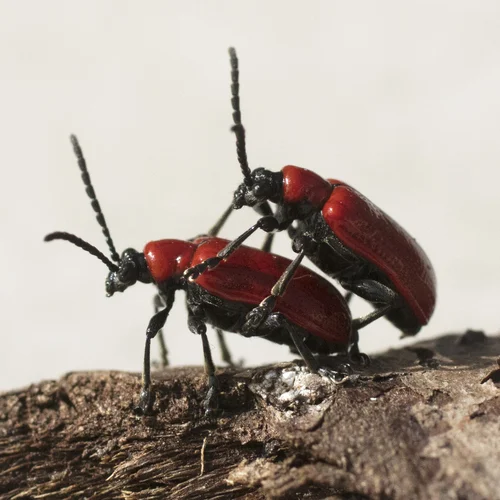

Scarlet beetles and dark-coated larvae strip true lilies
The most conspicuous stage of lily leaf beetle is the brilliant red adult, but its larvae can be easy to overlook. Search above and below a damaged leaf before discarding it. The material that looks like dirt on the lower surface can cover an insect that is still feeding.

Where to look
Confirm the host is a true lily or fritillary. Inspect chewed leaves and buds for a bright scarlet beetle with a dark head and legs. Inspect the area immediately below the plant after a beetle drops. Its darker underside can face upward against the soil, making the same insect much harder to find than when its red back was visible on a green leaf.
What confirms it
Look beneath leaves for lines of eggs and soft larvae covered in their own dark waste. A motionless-looking dark lump may conceal a feeding larva.
Similar damage
Daylilies differ from true lilies. On an unfamiliar plant, identify the host and locate a beetle or larva before attributing ragged holes to this species.
What to do
Hold a container underneath before reaching for adults, which can drop when disturbed. Remove reachable egg masses and larvae as well.
Follow-up
Revisit tender shoots and buds while new leaves unfold. An adult count alone can miss larvae already concealed beneath their dark coating.